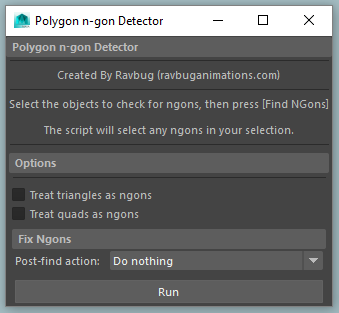
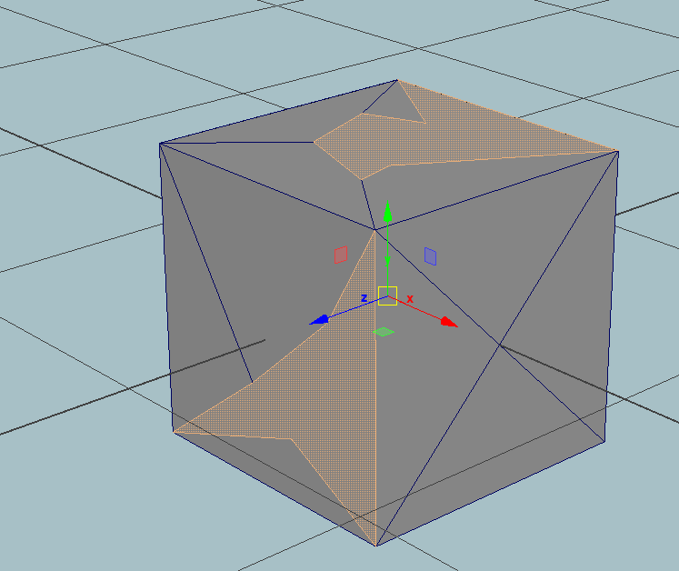

Main Window

 Polygon cube with N-Gons highlighted
This simple program scans any polygonal object and finds any N-Gons. An N-gon is a polygon face that
has more than 4 vertices (or 3 if your program doesn't accept quads).
To use, select any object or set of objects, launch the script, and press Run. You have the option of having
the program consider quads or tris (or both) to be N-Gons.
The program will select all the N-Gons and report how many it found. With the N-Gons selected, you can delete
them, or assign them a material, etc.
Main Window
 Polygon cube with N-Gons highlighted
This program analyzes the camera view and animation and finds objects that are always outside the camera's view.
It can also find objects that are always obscured by other objects. It selects these objects, so you can delete
them, put them on a display layer, etc.
To use, Go into a single-panel layout that shows the view you want to scan. Then deselect everything, c
onfigure the view, and press Scan
You can also use this script to check an object's geometry to see if there are any faces the camera never sees.
Running this script this on environment geometry and then deleting the detected faces can greatly improve render
times. Make sure to go enter isolate select and then go into component mode if you decide to do this.
Objects whose LOD is set to Template or Reference will confuse the script. Set all objects to a LOD of Normal.
Otherwise the script will flag them as being "invisible."

This simple utility adds customizable jitter to a camera (or any object with translate / rotate channels). Select
the objects, launch the script, and press Shake!

Creates a sphere that has no triangles or poles (vertex with many edges leading to it). Note: The sphere isn't perfect, so if you know a way to fix the shape, please let me know.
Bulk direct-connects a set of objects to a master object. Useful for easily setting up direct-drive for a
controller, Rig-wide node caching or Rig-wide evaluation disabling.
The script is very simple, so just copy-paste the code into the script editor.
/*
Created by Ravbug (ravbug.github.io)
Simple program to mass connect the attributes of one object to many.
*/
//Set the Master object name and attribute name
$master = "Root";
$attr = "Caching";
$attr2 = "caching";
$objs = `ls -sl`;
$full = $master + "." + $attr;
$count = 0;
for ($obj in $objs){
$exists = `attributeExists $attr2 $obj`;
if ($exists && $obj != $master){
$full2 = $obj + "." + $attr2;
connectAttr $full $full2;
$count = $count + 1;
}
}
print ("Connected " + $count + " objects to " + $full);